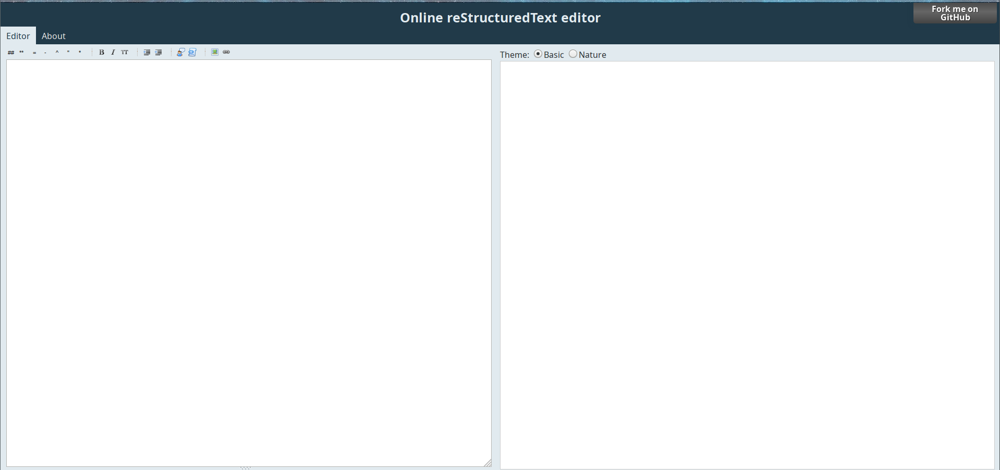

Syllabus Interactif
Double-panel pour l'édition d'une page rST. Par exemple,  (source : http://rst.ninjs.org/# )
Intégration de Sphinx dans le syllabus. Sphinx permet de créer de la documentation facilement. Pour plus d'information vous pouvez allez voir ici
Mettre en place le système de traduction via gettext. Traduction de la webapp mais aussi des pages (i.e., loading dynamique des pages en fonction de la locale)
Mettre un système de slide intégré au syllabus pour que le prof puisse faire des exercices directement dans le flot du cours théorique
Si vous avez des idées sympas, on peut toujours en discuter aussi !
Vous pouvez aussi créer des exercices pour le nouveau cours de Python qui va être lancé en septembre
Structure d'un exercice
+Task
| task.yaml
| run (script python qui lance le tout)
| +/src
| | Corr$Task.py (version correcte du code)
| | Test$Task.py (test et feedback)
| | +/Templates
| | | $task (template)
Il y a déjà plein d'exemples ici, n'hésitez pas à aller voir pour comprendre un peu le fonctionnement !
L'important ici est de faire des exercices avec un context intéressant. Le but n'est pas de faire un exercice difficile, mais de changer des habituels exercices mathématiques, listes chainées, etc.